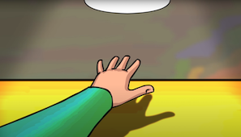
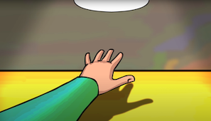

Avez-vous déjà vu ces formes flottantes étranges ? Vous êtes-vous déjà demandé ce ce que c’était ? Voici quelques explications simples !
Ces formes étranges, ressemblent à de minuscules vers transparents, et disparaissent si vous tentez de les regarder de plus près ! Ce phénomène courant est appelé corps flottants.
Inutile de vous rincer les yeux, ils existent à l’intérieur de votre globe oculaire ! Ces formes semblent vivantes puisqu’elles se déplacent et changent de formes, mais elles ne le sont (heureusement) pas !
Tout d’abord pas de panique, ces « flotteurs » sont tout à fait normaux et bénins. Ce sont des petits objets qui projettent des ombres sur la rétine (le tissu sensible au fond de votre œil).
Il peut s'agir de bouts de tissu, de globules rouges, d'amas de protéines, en suspension dans l’humeur vitrée (le liquide gélatineux qui remplit votre œil).

S’ils bougent lorsque l’on tente de les regarder, c’est parce qu’ils dérivent avec les mouvements de l’œil.
On les remarque plus facilement quand on regarde une surface claire uniforme : comme un ciel dégagé. En effet, lorsque l’on regarde le ciel, une grande quantité de lumière entre dans notre œil ce qui provoque la contraction de notre pupille. Ainsi, les flotteurs deviennent plus nets, tout comme lorsque l’on remplace une source de lumière diffuse par une source de lumière concentrée : l'ombre projetée est plus nette !
 

Ces flotteurs nous rappellent que ce que nous voyons dépend tout aussi bien de notre biologie que du monde extérieur.
 |
Blog créé par Daphné Pelat, dans le cadre du cours de création de site web de Liana Ermakova. Icons made by Freepik from www.flaticon.com. |